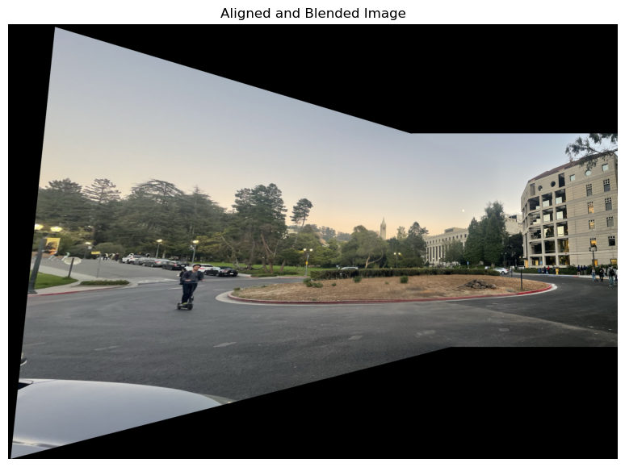

Project 4 - (Auto)Stitching Photo Mosaics
Filip Malm-Bägén

Part A - Introduction
This first part of the project goes through image warping and mosaicing. The goal is to create a panorama image from multiple images.
Shoot the Pictures
Approach
I took a lot of different pictures. The important things which I had in mind were that I must rotate the camera strictly around the optical center of the camera. In the beginning, I was careless about this, which resulted in a lot of problems. I also made sure to photograph scenes far away from the camera. This is important because the parallax effect is less significant when the objects are far away from the camera. I also made sure to have a lot of overlap between the images. This is important because the more overlap there is, the more information there is to stitch the images together.
Recover Homographies
Approach
I got the correspondig points using the same tool as used in project 3 to label the points of the two images. After getting the correspondig points, I used SVD to get the homography matrix. Once I had the points, I set up a system of linear equations. For each pair of corresponding points, I derived two equations, resulting in a system with as many equations as twice the number of points. To solve for the homography matrix, I used Singular Value Decomposition (SVD). This method allowed me to solve the system in a least-squares manner, which is more stable when dealing with more than the minimum four points. The final step involved reshaping the solution into a 3x3 matrix and normalizing it so that the lower-right corner was 1. This homography matrix is what I used to warp one image onto the other, aligning them for blending.
Warp the Images
Approach
To warp the image using the homography matrix, I transformed the
corners of the original image represented as homogeneous coordinates
by multiplying them with the homography matrix H. After
normalizing the resulting coordinates, I determined the new bounds
for the warped image. Next, I created a meshgrid for the output
image's coordinates and mapped them back to the input image using
the inverse homography matrix, H_inv. This reverse
mapping allowed me to retrieve pixel values from the original image.
For each channel, I employed the griddata function for
linear interpolation, filling in pixel values smoothly across the
warped image. Finally, the function returned the warped image,
facilitating accurate alignment in subsequent steps, such as image
stitching or blending.
Image Rectification
Blend the images into a mosaic
Approach
I began by loading two new images,
panorama_left and panorama_right, along
with their corresponding points from a JSON file. I visualized these
images alongside the marked points for reference. Using the function
computeH, I calculated the homography matrix
H2 to warp the left image into the perspective of the
right image. The warped points of the left image were computed using
the warpPoints function, which adjusted their
coordinates based on the new position on the warped image. Next, I
created a blending mask to seamlessly merge the two images. This
involved calculating the distance transform of both images and
generating an alpha mask to facilitate blending. I also implemented
the align_and_blend_images_custom function, which
calculated the necessary transformations to align and blend the
warped left image with the right image accurately. Finally, the
resultant aligned and blended image was displayed, showcasing the
effectiveness of the mosaicing process.
Results
Finally, I wanted to test the limits of the algorithm and took two images over Moffitt Library with a thin overlap (not even 40%, which was the recomended minimum). The result was not perfect, but it was still quite impressive. The algorithm managed to stitch the images together, but the seam is very blurry and not very well aligned. This can also be due to careless photography, or careless placement of the corresponding points. The result is still quite impressive, considering the lack of overlap.
Part B - Introduction
This second part of the project goes through the process of stiching images together into mosaics using corresponding points. The points are automaticaly identified, filtered and matched. The goal is to automaticaly create a panorama image from multiple images.
Interest Point Detector
Approach
In the first step, I used the Harris corner detection algorithm to
identify interest points. The images were converted to grayscale,
and corners were detected using get_harris_corners().
The function returned the corner strength map h and
corner coordinates, which were then plotted on the grayscale images.
The detected corners were visualized as blue points, showing the key
points of interest for further image stitching.
Result
Adaptive Non-Maximal Suppression
Approach
Next, I implemented Adaptive Non-Maximal Suppression (ANMS) to
select the strongest and most spatially distributed corners. The
Harris scores were used to compare corners, and pairwise distances
were computed with dist2(). Based on these distances
and corner strengths, a suppression process determined the minimum
radius for each point. The top corners were then selected and
visualized as red points on the images.
Result
Feature Descriptor Extraction
Approach
For each corner detected through ANMS, I extracted feature descriptors by sampling an axis-aligned 8x8 patch from a larger 40x40 window around each point. The larger window was first blurred using a Gaussian filter to ensure smoothness and reduce aliasing. Each patch was sampled with a spacing of 5 pixels and bias/gain-normalized by subtracting the mean and dividing by the standard deviation of the pixel values. Descriptors for each corner were created by concatenating the normalized patches from all three color channels into a single vector, forming a feature descriptor for each point.
Result
Feature Matching
Approach
To match feature descriptors between the two images, I implemented a feature matching algorithm based on Lowe's ratio test. For each feature in the first image, I calculated the distances to all feature descriptors in the second image using Euclidean distance. The two nearest neighbors were identified, and Lowe's ratio test was applied to ensure that the nearest neighbor is sufficiently better than the second. If the distance to the nearest neighbor was less than a specified threshold times the distance to the second, the match was retained. This process ensured robust feature matching and prevented incorrect matches due to ambiguous descriptors. One-to-one matching was enforced by keeping track of already matched points in the second image.
Result
4-Point RANSAC
Approach
Result
This webpage design was partly made using generative AI models.